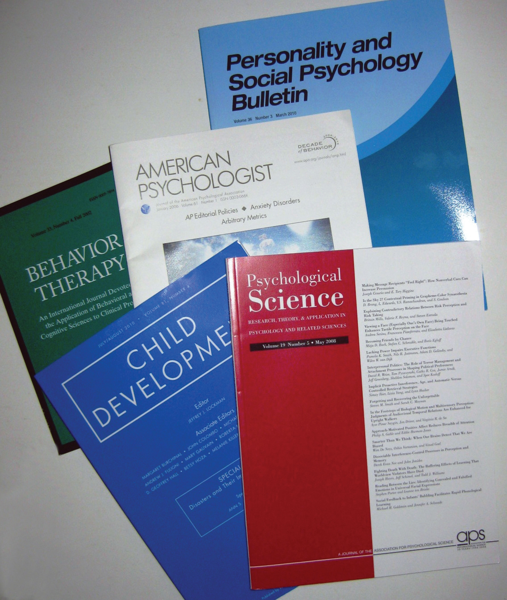

Reviewing the research literature means finding, reading, and summarizing the published research relevant to your question. An empirical research report written in American Psychological Association (APA) style always includes a written literature review, but it is important to review the literature early in the research process for several reasons.
The research literatureAll the published research in a particular field. in any field is all the published research in that field. The research literature in psychology is enormous—including millions of scholarly articles and books dating to the beginning of the field—and it continues to grow. Although its boundaries are somewhat fuzzy, the research literature definitely does not include self-help and other pop psychology books, dictionary and encyclopedia entries, websites, and similar sources that are intended mainly for the general public. These are considered unreliable because they are not reviewed by other researchers and are often based on little more than common sense or personal experience. Wikipedia contains much valuable information, but the fact that its authors are anonymous and its content continually changes makes it unsuitable as a basis of sound scientific research. For our purposes, it helps to define the research literature as consisting almost entirely of two types of sources: articles in professional journals, and scholarly books in psychology and related fields.
Professional journalsPeriodicals that publish new research. are periodicals that publish original research articles. There are thousands of professional journals that publish research in psychology and related fields. They are usually published monthly or quarterly in individual issues, each of which contains several articles. The issues are organized into volumes, which usually consist of all the issues for a calendar year. Some journals are published in hard copy only, others in both hard copy and electronic form, and still others in electronic form only.
Most articles in professional journals are one of two basic types: empirical research reports and review articles. Empirical research reportsA type of journal article in which the author reports on a new empirical research study. describe one or more new empirical studies conducted by the authors. They introduce a research question, explain why it is interesting, review previous research, describe their method and results, and draw their conclusions. Review articlesA type of journal article in which the author summarizes previous research on a particular topic. summarize previously published research on a topic and usually present new ways to organize or explain the results. When a review article is devoted primarily to presenting a new theory, it is often referred to as a theoretical articleA type of journal article in which the author presents a new theory or evaluates existing theories..
Figure 2.6 Small Sample of the Thousands of Professional Journals That Publish Research in Psychology and Related Fields
Most professional journals in psychology undergo a process of peer reviewA process in which new research submitted for publication is reviewed by two or more experts before an editor decides whether to publish it.. Researchers who want to publish their work in the journal submit a manuscript to the editor—who is generally an established researcher too—who in turn sends it to two or three experts on the topic. Each reviewer reads the manuscript, writes a critical review, and sends the review back to the editor along with his or her recommendations. The editor then decides whether to accept the article for publication, ask the authors to make changes and resubmit it for further consideration, or reject it outright. In any case, the editor forwards the reviewers’ written comments to the researchers so that they can revise their manuscript accordingly. Peer review is important because it ensures that the work meets basic standards of the field before it can enter the research literature.
Scholarly booksA book written by a professional researcher or practitioner primarily for other researchers and practitioners. are books written by researchers and practitioners mainly for use by other researchers and practitioners. A monographA scholarly book with a single author or small group of authors. is written by a single author or a small group of authors and usually gives a coherent presentation of a topic much like an extended review article. Edited volumesA scholarly book with an editor or small group of editors and chapters by several different authors. have an editor or a small group of editors who recruit many authors to write separate chapters on different aspects of the same topic. Although edited volumes can also give a coherent presentation of the topic, it is not unusual for each chapter to take a different perspective or even for the authors of different chapters to openly disagree with each other. In general, scholarly books undergo a peer review process similar to that used by professional journals.
The primary method used to search the research literature involves using one or more electronic databases. These include Academic Search Premier, JSTOR, and ProQuest for all academic disciplines, ERIC for education, and PubMed for medicine and related fields. The most important for our purposes, however, is PsycINFOThe primary computer database that catalogs research in psychology., which is produced by the APA. PsycINFO is so comprehensive—covering thousands of professional journals and scholarly books going back more than 100 years—that for most purposes its content is synonymous with the research literature in psychology. Like most such databases, PsycINFO is usually available through your college or university library.
PsycINFO consists of individual records for each article, book chapter, or book in the database. Each record includes basic publication information, an abstract or summary of the work, and a list of other works cited by that work. A computer interface allows entering one or more search terms and returns any records that contain those search terms. (These interfaces are provided by different vendors and therefore can look somewhat different depending on the library you use.) Each record also contains lists of keywords that describe the content of the work and also a list of index terms. The index terms are especially helpful because they are standardized. Research on differences between women and men, for example, is always indexed under “Human Sex Differences.” Research on touching is always indexed under the term “Physical Contact.” If you do not know the appropriate index terms, PsycINFO includes a thesaurus that can help you find them.
Given that there are nearly three million records in PsycINFO, you may have to try a variety of search terms in different combinations and at different levels of specificity before you find what you are looking for. Imagine, for example, that you are interested in the question of whether women and men differ in terms of their ability to recall experiences from when they were very young. If you were to enter “memory for early experiences” as your search term, PsycINFO would return only six records, most of which are not particularly relevant to your question. However, if you were to enter the search term “memory,” it would return 149,777 records—far too many to look through individually. This is where the thesaurus helps. Entering “memory” into the thesaurus provides several more specific index terms—one of which is “early memories.” While searching for “early memories” among the index terms returns 1,446 records—still too many too look through individually—combining it with “human sex differences” as a second search term returns 37 articles, many of which are highly relevant to the topic.
Depending on the vendor that provides the interface to PsycINFO, you may be able to save, print, or e-mail the relevant PsycINFO records. The records might even contain links to full-text copies of the works themselves. (PsycARTICLES is a database that provides full-text access to articles in all journals published by the APA.) If not, and you want a copy of the work, you will have to find out if your library carries the journal or has the book and the hard copy on the library shelves. Be sure to ask a librarian if you need help.
In addition to entering search terms into PsycINFO and other databases, there are several other techniques you can use to search the research literature. First, if you have one good article or book chapter on your topic—a recent review article is best—you can look through the reference list of that article for other relevant articles, books, and book chapters. In fact, you should do this with any relevant article or book chapter you find. You can also start with a classic article or book chapter on your topic, find its record in PsycINFO (by entering the author’s name or article’s title as a search term), and link from there to a list of other works in PsycINFO that cite that classic article. This works because other researchers working on your topic are likely to be aware of the classic article and cite it in their own work. You can also do a general Internet search using search terms related to your topic or the name of a researcher who conducts research on your topic. This might lead you directly to works that are part of the research literature (e.g., articles in open-access journals or posted on researchers’ own websites). The search engine Google Scholar is especially useful for this purpose. A general Internet search might also lead you to websites that are not part of the research literature but might provide references to works that are. Finally, you can talk to people (e.g., your instructor or other faculty members in psychology) who know something about your topic and can suggest relevant articles and book chapters.
When you do a literature review, you need to be selective. Not every article, book chapter, and book that relates to your research idea or question will be worth obtaining, reading, and integrating into your review. Instead, you want to focus on sources that help you do four basic things: (a) refine your research question, (b) identify appropriate research methods, (c) place your research in the context of previous research, and (d) write an effective research report. Several basic principles can help you find the most useful sources.
First, it is best to focus on recent research, keeping in mind that what counts as recent depends on the topic. For newer topics that are actively being studied, “recent” might mean published in the past year or two. For older topics that are receiving less attention right now, “recent” might mean within the past 10 years. You will get a feel for what counts as recent for your topic when you start your literature search. A good general rule, however, is to start with sources published in the past five years. The main exception to this rule would be classic articles that turn up in the reference list of nearly every other source. If other researchers think that this work is important, even though it is old, then by all means you should include it in your review.
Second, you should look for review articles on your topic because they will provide a useful overview of it—often discussing important definitions, results, theories, trends, and controversies—giving you a good sense of where your own research fits into the literature. You should also look for empirical research reports addressing your question or similar questions, which can give you ideas about how to operationally define your variables and collect your data. As a general rule, it is good to use methods that others have already used successfully unless you have good reasons not to. Finally, you should look for sources that provide information that can help you argue for the interestingness of your research question. For a study on the effects of cell phone use on driving ability, for example, you might look for information about how widespread cell phone use is, how frequent and costly motor vehicle crashes are, and so on.
How many sources are enough for your literature review? This is a difficult question because it depends on how extensively your topic has been studied and also on your own goals. One study found that across a variety of professional journals in psychology, the average number of sources cited per article was about 50 (Adair & Vohra, 2003).Adair, J. G., & Vohra, N. (2003). The explosion of knowledge, references, and citations: Psychology’s unique response to a crisis. American Psychologist, 58, 15–23. This gives a rough idea of what professional researchers consider to be adequate. As a student, you might be assigned a much lower minimum number of references to use, but the principles for selecting the most useful ones remain the same.